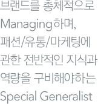

직무소개
각 분야별 상세한 직무소개
(RJP,Realistic Job Preview)를
통해, 입사지원시 지원자분에게
정확하고 실제적인 도움을
드리고자 합니다.
SALES
직무소개
영업직을 ‘외판원’이라고 바라보는 건 시대착오적인 견해입니다. 영업(Sales)은 브랜드를
총체적으로 Managing하는 하나의 축 입니다. 영업 직무는 매출을 일으키는
판매관리/유통망 확보/브랜드 마케팅 기획 및 전개까지 아우르는 많은 분야를 담당합니다.
매일 발생하는 매출에 대한 분석/대응을 위해선 빠른 판단력과 직관이 필요하며,
시장의 동향을 포착할 수 있는 분석력이 요구됩니다. 패션/유통/마케팅에 관한 전반적 지식과
역량을 구비해야 하는 ‘Special Generalist’라고 볼 수 있습니다.
재화를 판매하는 경로는 다양합니다. 유통영업 직무는 다양한 브랜드를 다루고 있습니다.
백화점/가두점/온라인/법인영업/지방상권/할인매장 등 세부 부서별로 전담하는 유통망은
다양하지만, 궁극적으로 효율적인 이윤 실현을 위해 새로운 유통채널의 연구 및 개발을
담당하는 직무입니다.
요구자질
- 유통 관련 지식(유통형태/상권분석 등). 원가/손익 관련 지식.
- 의사소통 능력/협상 능력.
- 제품/패션에 대한 이해.
- 조사/분석/통계 지식.
- 채권/담보 관련 지식
직무내용
- 1.유통망에 대한 지속적인 조사/분석을 실시하며, 우량 채널의 개설 및 효율적 관리를
수행합니다. - 2.비효율 유통망에 대한 활성화 전략 수립 및 Work-Out을 실시하여
Retail Infra 개선활동을 병행합니다. - 3.생산 일정을 최종 점검하고, 제품을 시중에 출시합니다.
- 4.자체 프로모션/마케팅 활동 등을 통해 매출 확대를 모색합니다.
- 5.매장 관련 Management (매출 및 재고관리/인적자원관리/상권분석 등)를 통해
수익 안정성 및 영업력을 지속/강화합니다. - 6.지속적인 新 유통채널 개발 및 매장 개설 활동을 통해 안정적이고 수익성 높은
판매경로를 확보합니다.
비전
매장 관계인/거래선 등을 만나며 의견을 조율해야 하는 일이 많기 때문에 활동적이고
의사소통 능력이 좋은 사람에게 적합합니다.
판매경로의 차이점은 있으나 기본적으로 영업 직무이기 때문에, 실적에 대해
지속적인 관심을 쏟아야 하는 스트레스가 있습니다.
하지만 소비자/시장/제품/손익구조에 대한 노하우와 더불어 유통망/상권분석/입지/온라인 마켓
등에 대한 경험을 축적할 수 있는 강점이 있습니다. 이러한 강점을 바탕으로 他 직무로의 순환이
이루어지며, 패션 유통 전문가로의 육성도 가능합니다.
세부직무
백화점영업, 가두점영업, 쇼핑몰영업, 법인영업, 지역영업, 아울렛영업 등